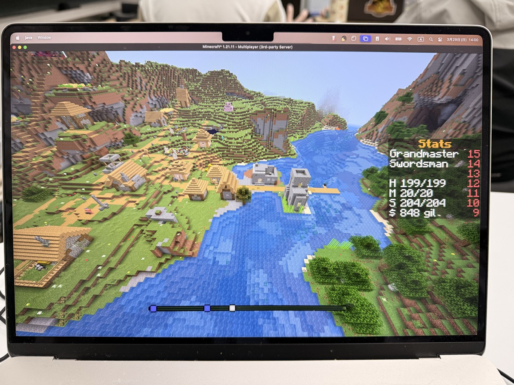

ルールが許しても、人は傷つく
マインクラフトデイでは、子どもたちが遊ぶサーバーのひとつに「経済・ロールプレイングサーバー」があります。 このサーバーにはマイクラデイ独自の「名声システム」があります。
マインクラフトの世界では、なんでもできます。 村のベッドを壊す。家畜を殺す。村人を殺す。 もちろん、他のプレイヤーが作ったもの、集めたものに対しても。 名声システムは、こうした行為を「禁止」するのではなく、やったことを「名声」という形で表現する仕組みです。
何をやったかは行動履歴として他のプレイヤーから見えるようになっており、名声が下がればシステム上も不利になることがある。 つまり、「やれないようにする」のではなく、「やったらどうなるかを体感できる」ようにしている。 それがこのシステムの考え方です。
スキルの中には「盗み」や「覗き見」もあります。 他のプレイヤーの持ち物を盗むことができる。でも盗めば名声は下がり、みんなにバレる。 ある日、このシステムの中で、ひとつの出来事が起きました。

システムの「穴」
名声システムの下では、盗みをすれば名声が下がり、行動履歴も残る。 やろうと思えばできるけれど、それ相応の結果がついてくる。 そういうバランスで設計されていました。
ところが、システムに不具合がありました。 ある状況下では、本来なら結果を引き受けるはずの盗みを、ほぼノーリスクで実行できてしまったのです。
「許されているからやった」
Aさんは、そのシステムの穴を使って別のプレイヤーのアイテムを盗みました。 問い詰められたAさんはこう答えました。
「システムで許されてるんだから、別に悪いことしてないでしょ」
— Aさん
たしかに、ゲーム上の操作としては正しい。 エラーも出ない。禁止もされていない。 システムは、その行為を「許して」いました。
「かえせ」「僕はわるくない」
盗まれたのは、小学3年生のBさんでした。 Bさんは半べそをかきながら「かえせ、かえせ」と怒りました。 対するAさんは「僕はわるくない」の一点張り。 このやりとりがしばらく続きました。
「かえせよ！ ずっと頑張って集めたのに！」
— Bさん（小学3年生）
「だから、僕はわるくないって。システムでできるんだから」
— Aさん
Bさんにとっては、システムがどうとかの話ではありません。 自分が大切にしていたものを目の前で奪われた。それだけのことです。 一方Aさんは、ルール上問題ないのだから自分に非はない、と本気で思っている。 どちらも嘘をついているわけではないのに、話がまったく噛み合わない。
その場で伝えたこと
運営としてその場にいた私は、AさんとBさんの両方に向けて伝えました。
「システムが許しているかどうか」と「人と人の間で問題が起きたかどうか」は別の話であること。 システムがどう動いていても、実際にここで起きたのは、ある人の行動が別の人を深く傷つけたという事実です。
そして、人と人の間で起きた問題は、人と人の間でしか解決できないこと。 システムを直せば同じことは防げるかもしれない。 でも、いま目の前にある感情のぶつかり合いは、当事者同士が向き合わなければ解消しません。
同時に、運営としても考えることがありました。 こうした不具合を作ってしまった側にも責任の一端がある。 仕組みが完璧であれば起きなかったかもしれないこの問題を、子どもたちだけの責任にするわけにはいきません。
ただし、それでも、人間関係の問題そのものは当人同士で向き合ってほしい。 それが、この場で伝えたことでした。
この話の先にあるもの
この出来事に「正解」はないと思っています。 ルールで許されていれば何をしてもいいのか。 仕組みの問題と人の問題、どちらを先に解決すべきなのか。 「許せない」という感情は、誰がどう受け止めるのか。
こうした問いに大人も子どもも一緒に向き合えること。 それが、マイクラデイの中で起きている「遊びの先にある学び」なのかもしれません。